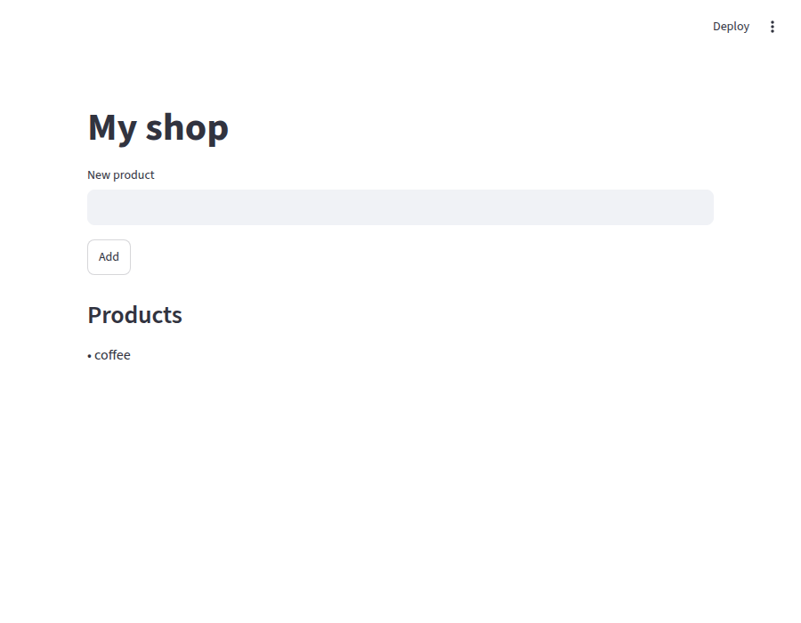

Docker Courseدورهی Docker
Docker Courseدورهی Docker
Docker Courseدورهی Docker
Docker Courseدورهی Docker
In Lesson 22 you used your API with curl. Real users want a web page. You'll add a third service, a frontend made with Streamlit (a Python library for quick web apps), to the same project.در درس ۲۲ با curl از API خودتان استفاده کردید. کاربران واقعی یک صفحهی وب میخواهند. یک سرویس سوم، یک frontend ساختهشده با Streamlit (یک کتابخانهی Python برای ساخت سریع برنامههای وب)، به همان پروژه اضافه میکنید.
Press → or Space to startبرای شروع → یا Space را بزنید
From Lesson 22: api (FastAPI) and db (PostgreSQL, data in pgdata).از درس ۲۲: api (FastAPI) و db (PostgreSQL، دادهها در pgdata).
New: a frontend service. It calls the API at http://api:8000.جدید: سرویس frontend. API را با آدرس http://api:8000 صدا میزند.
Your browser opens localhost:8501. ports: 8501:8501 is the only open door.مرورگر شما localhost:8501 را باز میکند. ports: 8501:8501 تنها در باز است.
Go to your project from Lesson 22, and make a frontend folder inside it:به پروژهی درس ۲۲ بروید و یک پوشهی frontend داخل آن بسازید:
The frontend gets its own folder because it gets its own image.frontend پوشهی خودش را میگیرد چون ایمیج خودش را دارد.
streamlitrequests
Create frontend/requirements.txt, then frontend/app.py.frontend/requirements.txt را بسازید، بعد frontend/app.py.
streamlit makes the web page; requests calls your API.streamlit صفحهی وب را میسازد؛ requests API شما را صدا میزند.
It reads the API's address from the environment variable API_URL (Lesson 11).آدرس API را از متغیر محیطی API_URL میخواند (درس ۱۱).
A text box and an Add button send a POST to your API.یک جعبهی متن و یک دکمهی Add یک درخواست POST به API شما میفرستند.
The list below shows the result of GET /products.فهرست پایین نتیجهی GET /products را نشان میدهد.
import os import requestsimport streamlit as st API_URL = os.environ["API_URL"] st.title("My shop") name = st.text_input("New product")if st.button("Add") and name: requests.post(f"{API_URL}/products", params={"name": name}) st.subheader("Products")for product in requests.get(f"{API_URL}/products").json(): st.write("•", product)
Create frontend/Dockerfile. Same pattern as the API (Lessons 19 and 22):frontend/Dockerfile را بسازید. همان الگوی API (درسهای ۱۹ و ۲۲):
FROM python:3.13-slimWORKDIR /appCOPY requirements.txt .RUN pip install -r requirements.txtCOPY . .EXPOSE 8501CMD ["streamlit", "run", "app.py", "--server.address", "0.0.0.0", "--server.headless", "true"]
--server.address 0.0.0.0Listen on all addresses of the container, like uvicorn's --host 0.0.0.0 (Lesson 22).روی همهی آدرسهای کانتینر گوش بده، مثل --host 0.0.0.0 در uvicorn (درس ۲۲).
--server.headless trueJust run the server: don't try to open a browser or ask questions inside the container.فقط سرور را اجرا کن: سعی نکن داخل کانتینر مرورگر باز کنی یا سؤال بپرسی.
EXPOSE 8501Streamlit uses port 8501. Create frontend/.dockerignore so the build files stay out of this image (Lesson 20):Streamlit از پورت 8501 استفاده میکند. frontend/.dockerignore را بسازید تا فایلهای ساخت بیرون از این ایمیج بمانند (درس ۲۰):
Dockerfile.dockerignore
The API's COPY . . (Lesson 22) copies all of ~/shop-api, and now that includes the frontend folder!COPY . . در API (درس ۲۲) همهی ~/shop-api را کپی میکند، و حالا پوشهی frontend هم جزو آن است!
Open ~/shop-api/.dockerignore and add a line frontend:~/shop-api/.dockerignore را باز کنید و یک خط frontend اضافه کنید:
db.envDockerfile.dockerignorecompose.yamlfrontend
✅ Now the API image doesn't get the frontend's files.✅ حالا ایمیج API فایلهای frontend را نمیگیرد.
services: frontend: build: ./frontend ports: - "8501:8501" environment: API_URL: http://api:8000 restart: unless-stopped api: build: . ports: "8000:8000" ✗ removed environment: DATABASE_URL: postgresql://ali:secret@db:5432/shop restart: unless-stopped db: image: postgres:alpine env_file: db.env volumes: - pgdata:/var/lib/postgresql volumes: pgdata:
Open ~/shop-api/compose.yaml. Add the frontend service at the top, and remove the ports lines from api.~/shop-api/compose.yaml را باز کنید. سرویس frontend را در بالا اضافه کنید و خطهای ports را از api حذف کنید.
build: ./frontendBuild this service's image from the Dockerfile in the frontend folder.ایمیج این سرویس را از Dockerfile داخل پوشهی frontend بساز.
"8501:8501"Your browser reaches the frontend on localhost:8501.مرورگر شما روی localhost:8501 به frontend میرسد.
API_URL: http://api:8000The frontend finds the API by its service name api (Lesson 13), on its own port 8000.frontend، API را با نام سرویسش api (درس ۱۳) روی پورت خودش 8000 پیدا میکند.
api: no portsapi: بدون portsOnly the frontend needs the API, and it's inside the network. Your browser doesn't need to reach the API directly (same idea as db in Lesson 13).فقط frontend به API نیاز دارد و آن داخل شبکه است. مرورگر شما لازم نیست مستقیم به API برسد (همان ایدهی db در درس ۱۳).
✔ Image shop-api-frontend Built # your frontend image
✔ Image shop-api-api Built
✔ Network shop-api_default Created
✔ Volume shop-api_pgdata Created
✔ Container shop-api-db-1 Started
✔ Container shop-api-frontend-1 Started
✔ Container shop-api-api-1 Started
NAME SERVICE STATUS PORTS
shop-api-api-1 api Up 7 seconds # no ports: private
shop-api-db-1 db Up 13 seconds 5432/tcp
shop-api-frontend-1 frontend Up 13 seconds 0.0.0.0:8501->8501/tcp, [::]:8501->8501/tcpfrontend-1 | You can now view your Streamlit app in your browser. frontend-1 | frontend-1 | Local URL: http://localhost:8501 ...
Compose built two of your own images and started three containers.Compose دو ایمیج از خودتان را ساخت و سه کانتینر را اجرا کرد.
All three services are Up. Only frontend has a published port; api has none.هر سه سرویس Up هستند. فقط frontend پورت منتشرشده دارد؛ api ندارد.
The frontend's log says it's ready (Lesson 5).لاگ frontend میگوید آماده است (درس ۵).
Open http://localhost:8501. Type coffee in New product and click Add:http://localhost:8501 را باز کنید. در New product بنویسید coffee و روی Add کلیک کنید:

Press → to follow coffee on its trip.→ را بزنید تا سفر coffee را دنبال کنید.
✅ coffee appears under Products. It traveled: browser → frontend → api → db, and back. Add a few more.✅ coffee زیر Products ظاهر میشود. این مسیر را رفت و برگشت: مرورگر ← frontend ← api ← db. چند محصول دیگر هم اضافه کنید.
Try to reach the API directly from your PC, like in Lesson 22:سعی کنید مثل درس ۲۲ مستقیماً از کامپیوترتان به API برسید:
curl: (7) Failed to connect to localhost port 8000 after 0 ms: Couldn't connect to server
❌ From your PC, the API is unreachable, because it has no ports. Yet the web page works, because the frontend talks to api inside the project's network.❌ از کامپیوتر شما، API در دسترس نیست، چون ports ندارد. با این حال صفحهی وب کار میکند، چون frontend داخل شبکهی پروژه با api صحبت میکند.
Open only what users need: here, just the frontend. The API and the database stay inside, where outsiders can't reach them. That's safer, and it's how real apps are deployed.فقط چیزی را باز کنید که کاربران لازم دارند: اینجا فقط frontend. API و دیتابیس داخل میمانند، جایی که غریبهها به آنها دسترسی ندارند. این امنتر است و برنامههای واقعی همینطور منتشر میشوند.
Remove everything, including the data (Lesson 15):همهچیز را حذف کنید، حتی دادهها (درس ۱۵):
Your built images stay; delete them if you like: docker image rm shop-api-frontend shop-api-api.ایمیجهای ساختهشدهی شما باقی میمانند؛ اگر خواستید حذفشان کنید: docker image rm shop-api-frontend shop-api-api.
📥 Stuck? The finished files are in examples/23-frontend/. Compare them with yours, or go into that folder and run docker compose up -d.📥 گیر کردهاید؟ فایلهای کامل در examples/23-frontend/ هستند. آنها را با فایلهای خودتان مقایسه کنید، یا به همان پوشه بروید و docker compose up -d را اجرا کنید.
You built a complete web app (frontend, backend and database), each part in its own container, all started with one command. That's how real projects use Docker.یک برنامهی وب کامل ساختید (frontend، backend و دیتابیس)، هر بخش در کانتینر خودش، همه با یک دستور اجرا شدند. پروژههای واقعی دقیقاً همینطور از Docker استفاده میکنند.
frontendStreamlit web page: your image, built from ./frontend, the only published portصفحهی وب Streamlit: ایمیج شما، ساختهشده از ./frontend، تنها پورت منتشرشده
apiFastAPI: your image, private, reached as http://api:8000FastAPI: ایمیج شما، خصوصی، با آدرس http://api:8000
dbPostgreSQL: ready-made image, private, data in a volumePostgreSQL: ایمیج آماده، خصوصی، دادهها در volume
docker compose up -dOne command builds and starts all of itیک دستور همه را میسازد و اجرا میکند